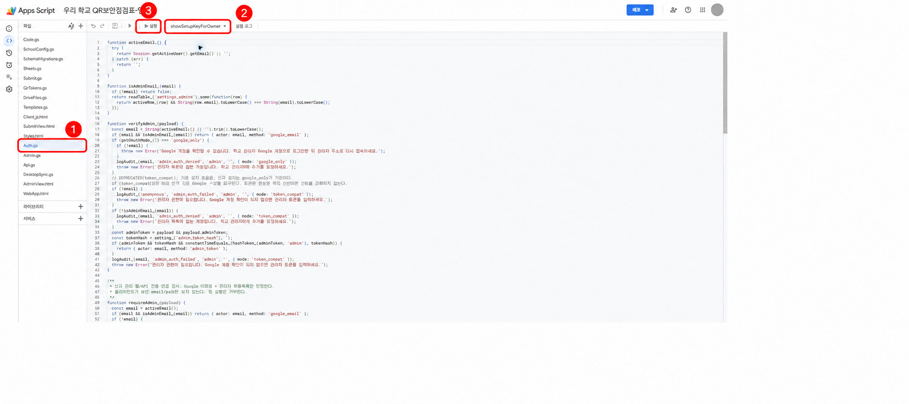

설치 안내 · OAuth 앱은 외부 프로덕션 상태이나 Google 권한 심사는 아직 완료되지 않았습니다. 미검증 경고·사용자 한도·학교 Workspace 정책 제한이 있을 수 있습니다. 학교에서 승인한 계정으로 설치하고, 초기 설정과 테스트 제출을 확인한 뒤 사용하세요.
설치 단계별 안내
어느 학교에서 사용하시나요?
먼저 기본 정보를 입력합니다. 입력값은 현재 브라우저의 메모리에만 머물며 별도의 중앙 서버로 보내지 않습니다.
점검표 관리를 맡을 담당자 이메일입니다.
실제 설치할 때는 학교에서 승인한 계정을 사용하세요.
필수 정보를 모두 입력하면 다음 단계가 활성화됩니다.
학교 계정에 연결합니다.
학교 담당자가 권한 내용을 확인한 뒤 Google 연결을 승인합니다. 권한을 허용하지 않으면 다음 단계로 진행할 수 없습니다.
설치센터 Google 연결 정보가 준비되지 않았습니다
설치센터 Google 연결 정보가 준비되지 않았습니다
우리 학교의 공간을 만듭니다.
연결이 준비되면 아래 자료를 학교 계정에 생성합니다. 연결이 끊기거나 서버가 바쁠 때는 잠시 기다린 뒤 다시 시도 버튼을 누르세요.
점검 기록표
Google Sheets · 제출 내용 관리
생성 대기
첨부 보관 폴더
Google Drive · 사진과 자료 보관
생성 대기
학교 전용 점검 웹앱
Apps Script · 점검과 관리자 화면
생성 대기
게시된 실행 파일을 사용하는 시범 설치입니다. Google 동의와 학교 설정이 필요하며, 권한 심사 전에는 계정·학교 정책에 따라 연결이 제한될 수 있습니다.
마지막 설정도 번호대로 진행하세요.
한 단계가 끝나면 다음 버튼이 활성화됩니다. 키는 다른 사람에게 보내지 말고 이 설치에만 사용하세요.
1
1. Apps Script 편집기 열기
초기 설정 키 만들기
아래 버튼으로 학교 계정의 Apps Script 편집기를 엽니다.

- 왼쪽 파일 목록에서 Auth.gs를 누릅니다. 다른 파일에서는 필요한 함수가 목록에 보이지 않을 수 있습니다.
- 위쪽의 현재 함수 이름과 ▼가 표시된 곳을 누르고
showSetupKeyForOwner를 선택합니다. - 왼쪽의 삼각형 아이콘이 있는 실행을 누릅니다. Google 권한 화면이 나오면 설치한 학교 계정으로 승인합니다.
- 실행이 끝나면 위쪽의 실행 로그를 누릅니다.
- 로그에서
SETUP_KEY:뒤의 긴 값만 복사합니다.SETUP_KEY:글자는 복사하지 않습니다.
showSetupKeyForOwner
2
학교 정보 저장하기
1번을 확인하면 초기 설정 화면 버튼이 활성화됩니다.
학교명앞에서 입력한 학교명
관리자 이메일앞에서 입력한 이메일
Sheet ID
생성 후 표시됩니다열린 화면에 위 세 값과 복사한 초기 설정 키를 입력한 뒤 초기 설정 저장을 누르세요.
3
학교 연결 확인하기
실제로 학교 저장소에 초기 설정이 완료됐는지 확인합니다.
4
관리자 화면 열기
관리자 주소 보관하고 마치기
연결 검사가 성공해야 마지막 버튼이 활성화됩니다.
설치 중 창을 닫았나요? 이어서 설치하기
표시된 JSON은 떠나기 전에 직접 복사하세요. 토큰·비밀번호·초기 설정 키는 넣지 마세요.
릴리스 정보는 게시된 실행 정보를 기준으로 표시됩니다. 시범 제공 중이며 Google 권한 심사와 학교별 설치·제출 확인이 남아 있습니다.